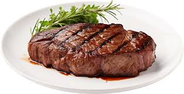

Steak

Masterfully grilled to a flawless medium-rare, complemented by a whisper of garlic and shallots, delivering an indulgent and refined gastronomic experience.
Watch Video
Ingredients
- 1. Salt
- 2. Prime Steak
- 3. Black Pepper
- 4. Olive Oil
Directions
- 1. On a clean, flat surface, season the steak generously with salt and freshly ground black pepper.
- 2. Drizzle olive oil over the steak, ensuring it's evenly coated.
- 3. Preheat a skillet over high heat until it's smoking hot.
- 4. Carefully place the steak in the skillet, searing each side for 3-4 minutes.
- 5. Reduce heat to medium and continue cooking to your desired doneness.